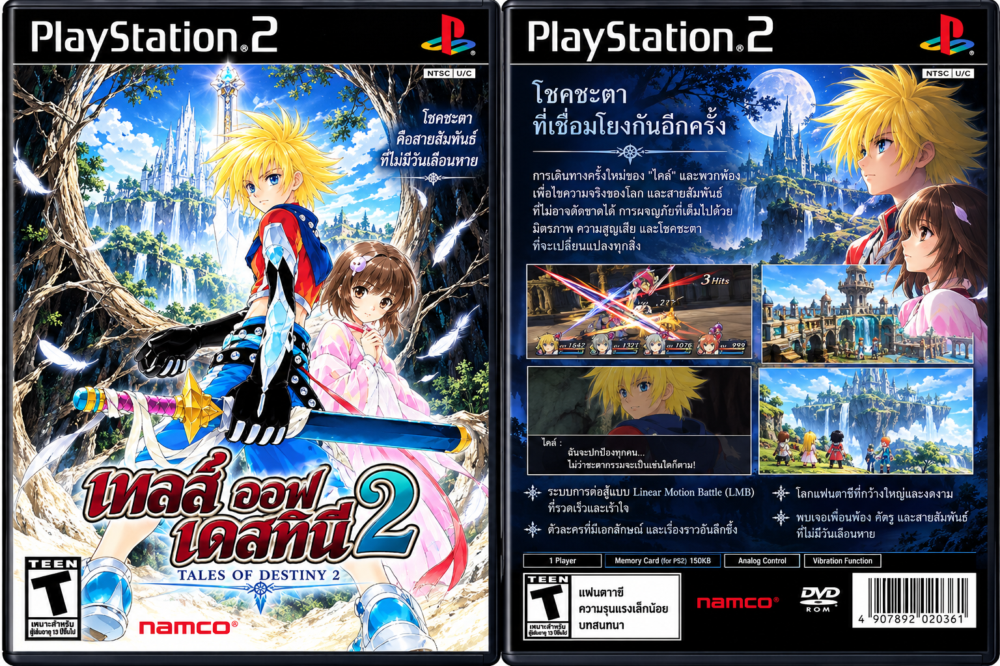

กำลังทดสอบเบต้า
Tales of Destiny 2 ภาษาไทย v.1

โปรเจกต์แปลเกม RPG บน PlayStation 2 เรื่องราวของไคล์และเรียล่าที่ออกเดินทางตามหาความจริงเกี่ยวกับชะตากรรมและโลกที่พวกเขาอาศัยอยู่
แพตช์ภาษาไทยบนเว็บ
เลือก ISO ของคุณ แล้วบันทึก ISO ภาษาไทยเป็นไฟล์ใหม่ได้บนหน้านี้ ตัวเกมจะประมวลผลในเครื่องของคุณ ไม่ถูกอัปโหลดขึ้นเว็บ ใช้ Chrome หรือ Edge บนคอมพิวเตอร์ และเตรียมพื้นที่ว่างอย่างน้อย 4 GB
ยังไม่ได้เลือกไฟล์
ระบบตรวจ SHA-256 ของ ISO ต้นทางก่อนแพตช์ และตรวจผลลัพธ์ก่อนบันทึกเสร็จ หากไฟล์ไม่ตรงรุ่น ระบบจะหยุดโดยไม่แก้ ISO ต้นฉบับ
ข้อมูลตรวจสอบไฟล์
SHA-256 ISO ต้นทาง:
553416634354781b2b3d0a504e8ea4f87bea070bed59f089135c8ac81c2b9cc2
SHA-256 ISO ภาษาไทย:
6a6454ebb23fc0414aba6c9ea29dfcfb91491502eb45ea61eef5bc81a7e97c3b
แปลส่วนใดแล้ว
- บทสนทนาและข้อความเนื้อเรื่องในฉากต่าง ๆ
- ชื่อผู้พูดและป้ายชื่อตัวละครที่ปรากฏในบทสนทนา
- ข้อความแจ้งเตือน คำสั่งเลือก และข้อความประกอบฉากที่อยู่ในไฟล์บทสนทนา
คำแปลถูกนำเข้าชุดทดสอบจากไฟล์บทสนทนา 459 ไฟล์ และตรวจสอบข้อความกับรหัสควบคุมหลังประกอบกลับแล้ว
สถานะการทดสอบ
- ทดสอบฉากต้นเกมแล้ว พบว่าบทสนทนาภาษาไทยแสดงขึ้นและกดปุ่ม O เพื่อไปต่อได้
- ยังเป็นรุ่นเบต้า และยังไม่ได้ทดสอบเล่นครบทั้งเกม
- เมนู ชื่ออุปกรณ์ และคำอธิบายบางรายการยังอาจเป็นภาษาอังกฤษหรืออยู่ระหว่างตรวจแก้
- ชื่อไทยในหน้าต่อสู้และบางเมนูอาจแสดงเป็นตัวอักษรเพี้ยนในรุ่นนี้
- สกรีนแชตยังเป็นภาษาญี่ปุ่นในแพตช์ปัจจุบัน และกำลังเตรียมคำแปลไทย
- ข้อความที่ฝังอยู่ในภาพหรือวิดีโออาจยังไม่แปล
หมายเหตุ: รุ่น v.1 นี้จัดทำเพื่อทดลองใช้งานและรับรายงานจุดผิดพลาด โปรดสำรองไฟล์เกมและเซฟของคุณก่อนทดสอบ